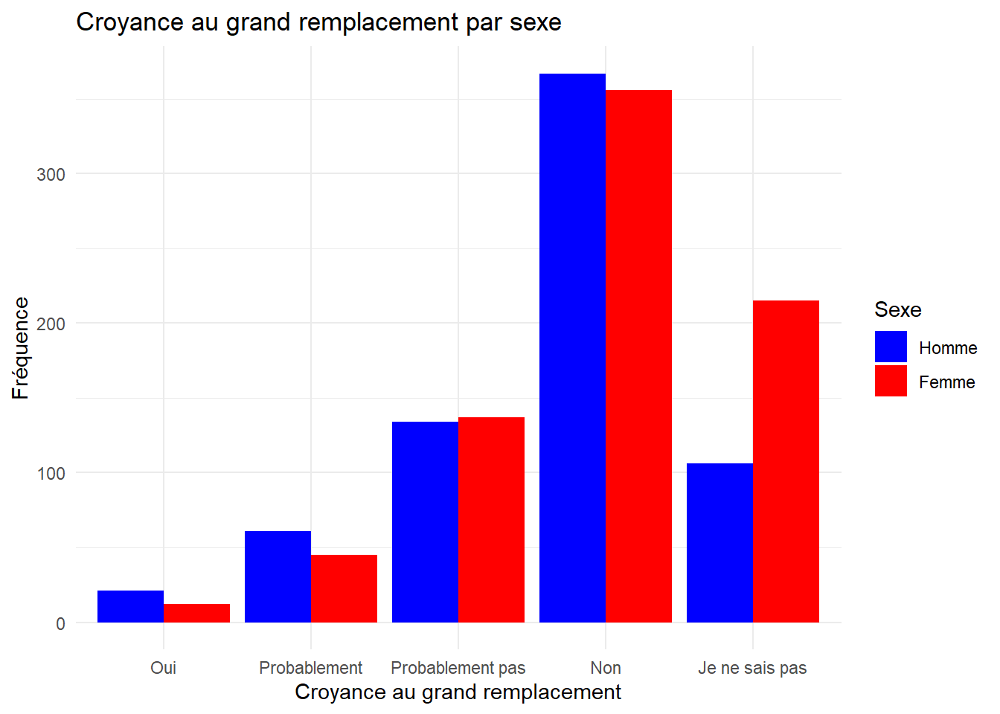
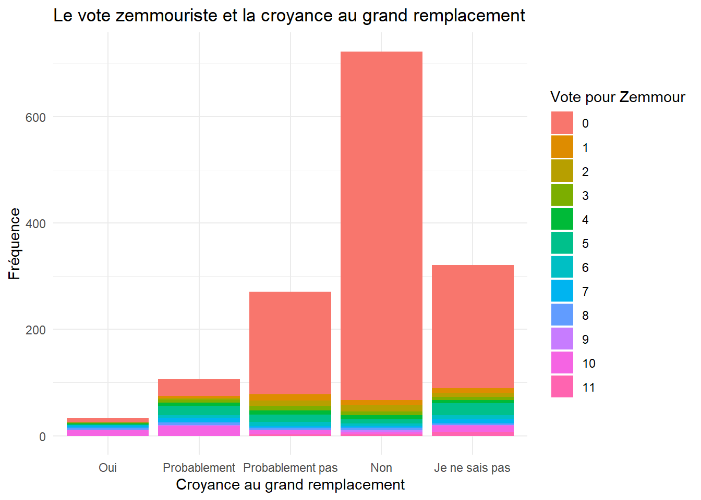
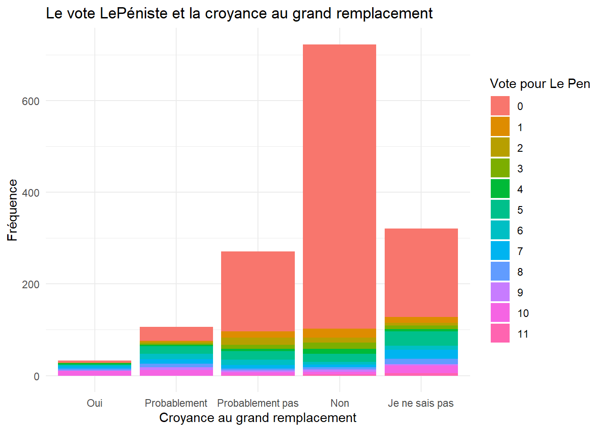
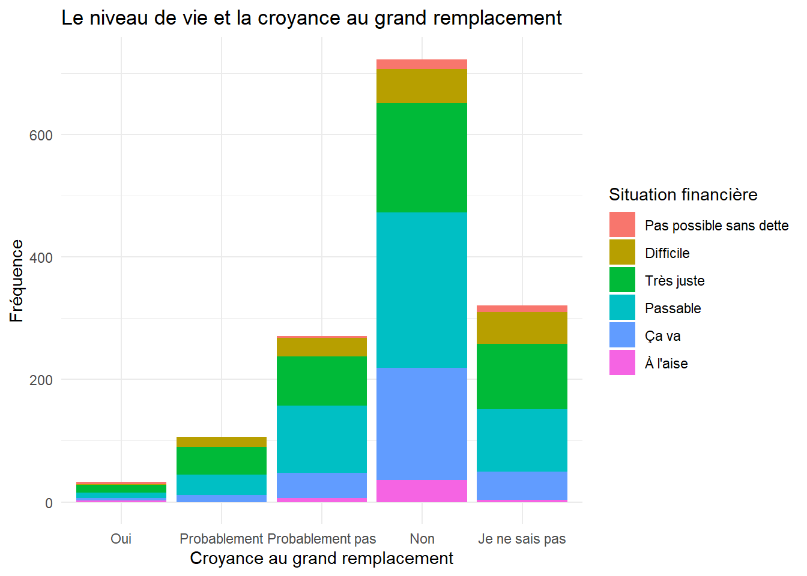
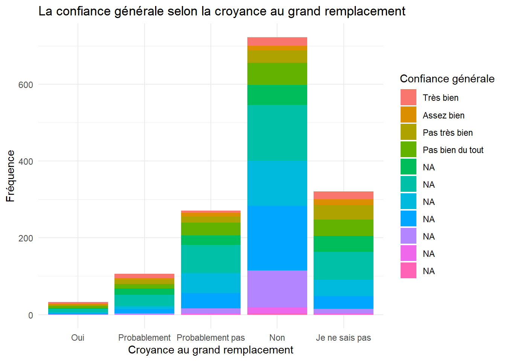
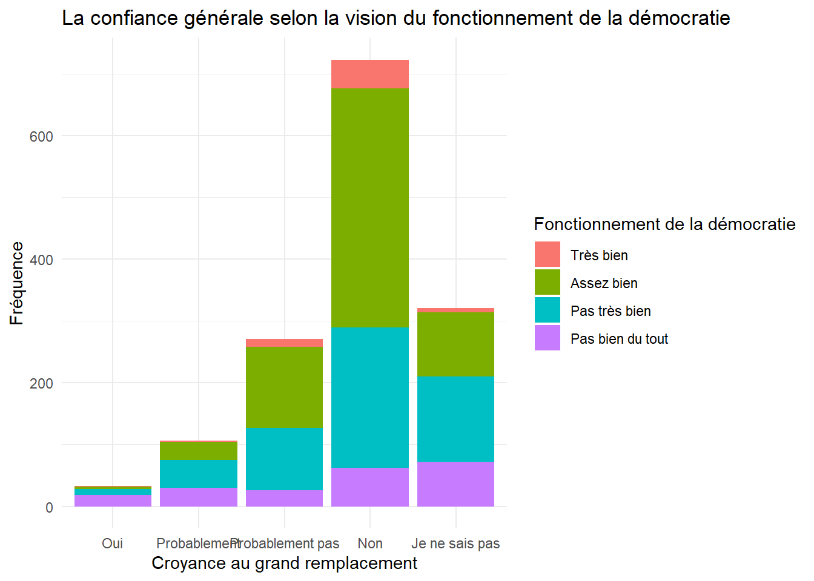

L'objet de cette étude est de découvrir les caractéristiques des électeurs d'extrême droite. Quelles sont ces caractéristiques? Notre hypothèse est que le Rassemblement National n'est plus un parti d'extrême droite, ou que seule une minorité de sa base électorale l'est, que Reconquête est le nouveau parti d'extrême droite en plus de la base extrême droite restante du Rassemblement National et que les caractéristiques principales d'un électeur d'extrême droite est un revenu faible, un manque de confiance aux autres et une déception de la démocratie en France. Nous assignons l'électeur de l'extrême à une réponse favorable ou un peu favorable à la question d'une croyance au grand remplacement. L’élection présidentielle de 2022 en France a été marquée par une polarisation politique intense et des débats passionnés sur les idéologies et les orientations des électeurs. Malgré la guerre en Ukraine, le début de la course présidentielle avait marqué un profond ancrage de sujets reliés à l'extrême droite française, incarnée avant tout par Éric Zemmour et son nouveau parti « Reconquête ». L'ancienne figure phare du camp politique de l'extrême droite est Marine Le Pen mais l'arrivée du journaliste dans la course à la présidence a changé les paramètres habituels de la politique française.
Nous devrions tout d'abord mettre une chose au clair. Qu'est-ce que nous entendons par « extrême droite »? Le terme est extrêmement vague et très peu limité. En général, les partis d'extrême gauche ou droite sont par définition minoritaires. Pourrions-nous alors prendre le Rassemblement National comme un parti d'extrême droite alors que presque la moitié des français vote pour celui-ci. Ceci ne serait pas utile, notre objectif est de décrire une partie spécifique de la population qui doit, pour l'utilité de cet exercice, être minoritaire afin d'avoir des caractéristiques spécifiques.
Le spectre gauche-droite est comme le qualificatif l'indique un spectre. Ceci veut dire qu'il y a un mouvement à l'intérieur de ce spectre. Le clivage bouge en même temps que les orientations idéologiques des partis bougent (Quinchon-Caudal 2021). L'extrême droite de hier peut être la droite d'aujourd'hui (Quinchon-Caudal 2021). Ceci irait avec le concept du « Radical Right Gender Gap » qui soutient que le fait que la candidate phare du Rassemblement National soit une femme fait en sorte que les femmes auraient tendances à voter plus pour des partis plus à droite comme celui-ci (Amengay et al 2017). L'arrivée de ces nouvelles électrices au Rassemblement National a sûrement eu un effet d'adoucissement des discours de ce parti et un penchant plus à gauche sur certains sujets. Ceci nous semble une des explications plausibles pour cet écart et les changements récents du Parti.
De plus, nous allons aussi nous focaliser sur une question clé à laquelle les répondants du sondage que nous allons utiliser ont eu à répondre. Celle-ci est la croyance à la théorie du « grand remplacement ». Un trait très prégnant d'une adhérence à l'extrême droite en France et en Europe est une réponse affirmative à cette question (Ivaldi 2014). Cette théorie soutient qu'il existe un projet d'une immigration massive venant du sud majoritairement musulman pour remplacer la population locale. Tout ceci orchestré par une élite politique.
Raisons motivants la recherche
Avec la montée des populismes en Europe, surtout de droite, l'arrivée massive de migrants du sud, la défaite économique des classes ouvrières à cause de la globalisation et la baisse du niveau de vie des classes moyennes, nous nous inquiétons pour la stabilité de cette partie du monde. Les souvenirs des années 30 et 40 sont toujours vivants mais nous avons l'impression que ceux-ci s'estompent au fur et à mesure que les années passent. En dehors des parallèles historiques aisément réalisables, nous nous inquiétons aussi des programmes futurs des partis politiques. Nous partons de la supposition que les opinions des électeurs créent les programmes politiques, dans la logique de la demande qui cause la production. Tout cela n'est pas spécifiquement européen, il y a une baisse de la démocratie, même de l'importance apporté à celle-ci par les populations qui y vivent. Toutefois, assez ironiquement l'amour de la démocratie est en croissance en Afrique qui elle n'a que très peu de régime démocratique (Ghana, Botswana, Mauritius).
Les données
Pour répondre à nos questions de recherche, nous allons utiliser la base de données de la « french electoral study » de 2022. Cette base de données est composée des réponses reçues à un sondage donné aux électeurs français de l'élection présidentielle de 2022. Le nombre de répondants est de 1614. Ceux-ci sont les 84,7% des 1905 invités à répondre à l'enquête électorale. Ils sont tous issues de la France Métropolitaine hors Corse. Ceci est important car par exemple les électeurs du Rassemblement National de Mayotte sont exclus, ceux-ci sont un cas à part dû à la proximité des Comores et du flux migratoire important qui cause ce vote.
Notre base de données est aussi composée des variables auxquelles nos répondants ont répondu de « l'Enquête annuelle ». Les variables se comptent au nombre de 258. Les répondants ont été choisis aléatoirement. Elles sont toutes ordinales en dehors des variables dichotomiques comme le sexe. Elles sont des questions sur les caractéristiques socio-économiques, démographiques, le sexe, l'âge, le statut familial et marital, le nombre d'enfants et encore plus. Les questions plus axées sur la politique sont en première partie celles qui portent sur les thématiques les plus importantes et les autres sur les candidats, leur qualification gauche-droite et la préférence du répondant pour l'un deux. Les variables qui nous intéressent sont, pour la partie politique, les questions reliées à Marine Le Pen et Zemmour, la démocratie, et la fameuse question du grand remplacement. Pour les caractéristiques socio-démographiques comme le sexe, le niveau de vie (ou la perception du niveau de vie) vont être utilisées avec les variables politiques. Il est important de noter dès le début que 53,2% des répondants sont des femmes, 46,8% des hommes. C'est pour cela que quand nous utiliserons la variable sexe, nous allons prendre en compte cette légère différence.
Analyse et résultats
Puisque nous ne comptons pas utiliser toutes les variables de notre base de données, nous avons sélectionner (avec la fonction select()) celles qui nous intéressent le plus : le sexe, la croyance au grand remplacement, l'intention de vote pour Marine Le Pen et Zemmour, la confiance aux autres, la vision du fonctionnement de la démocratie et la situation financière des répondants.
Ensuite, nous les avons renommées pour que nous puissions les manipuler plus facilement avec la fonction rename(). Et nous avons éliminé les lignes avec des variables manquantes grâce à la fonction na.omit(). De plus nous avons factorisé la variable « Sexe » pour que nous puissions l'utiliser avec des barres groupées.
Tout d'abord, nous allons vérifier la proportion d'hommes et de femmes qui croient en cette théorie. Comme nous pouvons le constater, le nombre de femmes est relativement moins élevée que celui des hommes. En terme général, la majorité des participants n'y croit pas et une part non-négligeable des femmes ont répondu qu'elles ne savent pas si un tel projet existe ou pas. Une théorie intéressante est celle de l'anthropologue Emmanuel Todd. Celui-ci avance que les femmes sont moins racistes que les hommes en utilisant des données statistiques américaines (Todd 2021). Les femmes blanches sont 5 fois plus susceptibles de se marier à un homme noir que l'inverse. Ceci est dû selon lui à deux valeurs fondamentales qui séparent les deux sexes. Les femmes sont altruistes et individualistes, les hommes égoïstes et collectivistes. L'aspect plus raciste des hommes viendraient de leur tendance au collectif, au groupe (Todd 2021). Les hommes voient le monde en groupe, et rejettent les autres groupes par égoïsme, tandis que les femmes voient beaucoup plus les individus en tant que tels et sont plus aptes à ne pas penser qu'à elle-même (Todd 2021).
ggplot(data_super_nettoye2, aes(x =factor(Remplacement), fill =factor(Sexe))) +geom_bar(position ="dodge") +labs(x ="Croyance au grand remplacement", y ="Fréquence", fill ="Sexe") +scale_x_discrete(labels =c("Oui", "Probablement", "Probablement pas", "Non", "Je ne sais pas")) +scale_fill_manual(labels =c("Homme", "Femme"), values =c("1"="blue", "2"="red")) +ggtitle("Croyance au grand remplacement par sexe") +theme(plot.title =element_text(face ="bold", family ="Arial")) +theme_minimal()

Dans les prochains graphiques nous allons vérifier la présence des croyants au grand remplacement au sein des potentiels électeurs de Zemmour et Le Pen.
ggplot(data_super_nettoye2, aes(x =factor(Remplacement), fill =factor(Vote_Zemmour))) +geom_bar(position ="stack") +labs(x ="Croyance au grand remplacement", y ="Fréquence", fill ="Vote pour Zemmour", title ="Le vote zemmouriste et la croyance au grand remplacement") +scale_x_discrete(labels =c("Oui", "Probablement", "Probablement pas", "Non", "Je ne sais pas")) +theme_minimal()

ggplot(data_super_nettoye2, aes(x =factor(Remplacement), fill =factor(Vote_Le_Pen))) +geom_bar(position ="stack") +labs(x ="Croyance au grand remplacement", y ="Fréquence", fill ="Vote pour Le Pen", title ="Le vote LePéniste et la croyance au grand remplacement") +scale_x_discrete(labels =c("Oui", "Probablement", "Probablement pas", "Non", "Je ne sais pas")) +theme_minimal()

Nous pouvons très nettement voir qu'à part quelques cas très isolés, les électeurs de ces deux candidats y croient. En plus, ceux qui n'y croit certainement pas sont pratiquement absents. Les gens qui ne croient pas en cette théorie sont absents de leur électorat. Les deux graphiques sont quasiment identiques. N'étant pas sûr des résultats après la choquante ressemblance, nous avons vérifié ceux-ci dans le document associé à la base de données et confirmé qu'en effet ceux-ci sont extrêmement similaires. Les deux électorats semblent être tous deux extrêmement unis sur la question migratoire à cause de cette croyance ou semi-croyance à une théorie du complot.
Maintenant, intéressons-nous aux autres variables qui montreraient les caractéristiques des électeurs d'extrême droite. Ceux-ci sont-ils des gens qui voient le fonctionnement de la démocratie en France de manière positive, ont confiance aux autres, et ont une situation financière correcte ?
ggplot(data_super_nettoye2, aes(x =factor(Remplacement), fill =factor(Situation_financiere))) +geom_bar(position ="stack") +labs(x ="Croyance au grand remplacement", y ="Fréquence", fill ="Situation financière", title ="Le niveau de vie et la croyance au grand remplacement") +scale_x_discrete(labels =c("Oui", "Probablement", "Probablement pas", "Non", "Je ne sais pas")) +scale_fill_discrete(labels =c("Pas possible sans dette", "Difficile", "Très juste", "Passable", "Ça va", "À l'aise", "Très à l'aise")) +theme_minimal()

Les résultats ne sont pas très choquants. Les gens qui ont le meilleur niveau de vie par aisance financière sont ceux qui ne croient pas au grand remplacement. Par contre, il n’y en a pratiquement pas pour ceux qui croient en la théorie ou presque. Assez étrangement, certains qui ont répondu certainement oui à la réponse du grand remplacement ont un niveau de vie à l’aise tandis que ceux qui n’y croient pas totalement n’ont presque aucun membre à l’aise. Aurions-nous trouver une trace d’une bourgeoisie déclassé? Ceci rentre dans le contexte de globalisation qui engendre des classes moyennes et ouvrières largement perdantes face à la concurrence des États étrangers (Goodliffe 2012). Celles-ci mettraient la faute sur les autres États qui en plus d'obtenir les usines et les métiers traditionnels des locaux, envoient des ressortissants les prendre chez eux-mêmes (Goodliffe 2012). Mais une partie de la bourgeoisie peut elle aussi perdre sa place dans la globalisation. Proportionnellement parlant, la part des gens en difficulté est plus élevée pour ceux qui y croient. Encore une autre hypothèse confirmée.
ggplot(data_super_nettoye2, aes(x =factor(Remplacement), fill =factor(Confiance_aux_autres))) +geom_bar(position ="stack") +labs(x ="Croyance au grand remplacement", y ="Fréquence", fill ="Confiance générale", title ="La confiance générale selon la croyance au grand remplacement") +scale_x_discrete(labels =c("Oui", "Probablement", "Probablement pas", "Non", "Je ne sais pas")) +scale_fill_discrete(labels =c("Très bien", "Assez bien", "Pas très bien", "Pas bien du tout")) +theme_minimal()

Le niveau de confiance est plus haut plus le nombre est haut. Encore une fois, notre hypothèse semble juste. Les personnes qui détiennent cette croyance ont moins confiance aux autres. Le nombre est très élevé chez ceux qui sont certains de l'existence de la théorie de complot, et la médiane est en dessous de ceux qui sont soit douteux ou n'y croient pas du tout. La médiane pour ceux qui croient que potentiellement la théorie est vraie est la même, mais leur nombre est plus bas. Ceux qui n'y croient pas du tout sont ceux qui font le plus confiance aux autres. Ceci fait du sens. Le grand remplacement est au final une théorie xénophobe qui nécessite un certain niveau d'aliénation et de méfiance envers la société et les gens autour d'eux (Goodliffe 2012). Une plus grande méfiance indique aussi une moins grande chance de parler et de converser avec les autres, ce qui peut mener à une aliénation encore plus élevée et crescendo (Goodliffe 2012).
ggplot(data_super_nettoye2, aes(x =factor(Remplacement), fill =factor(Fonctionnement_de_la_democratie))) +geom_bar(position ="stack") +labs(x ="Croyance au grand remplacement", y ="Fréquence", fill ="Fonctionnement de la démocratie", title ="La confiance générale selon la vision du fonctionnement de la démocratie") +scale_x_discrete(labels =c("Oui", "Probablement", "Probablement pas", "Non", "Je ne sais pas")) +scale_fill_discrete(labels =c("Très bien", "Assez bien", "Pas très bien", "Pas bien du tout")) +theme_minimal()

Dans ce graphique à barre empilée, nous avons les différentes appréciations de la démocratie selon les niveaux de croyance au grand remplacement. Nous pouvons constater dès le début que proportionnellement parlant ceux qui y croient ont quasi-unanimement une vision négative du fonctionnement de la démocratie. Ceux qui pensent que probablement que la théorie est vraie sont eux aussi en majorité peu enthousiastes tandis que ceux qui n'y croient pas ou presque pas sont beaucoup moins pessimistes. Ceci va encore dans le sens de notre hypothèse, il y a une corrélation clairement visible dans ce graphique. Pourquoi est-ce que quelqu'un croyant en une théorie dont les élites vont contre les intérêts du peuple national serait optimiste face à la démocratie? Il y a un profond mépris du système actuel dans la pensée complotiste du grand remplacement, et ce graphique ne fait que nous le mettre au clair (Ivaldi 2014).
Conclusion
En conclusion, nos résultats confirment largement nos hypothèses. Les électeurs d'extrême droite sont plus méfiants des autres, moins bien nantis, et ont une mauvaise opinion de la démocratie française. Il y a une légère majorité d'homme proportionnellement parlant qui en font partie. Nous avons confirmé cela par notre variable fétiche, le grand remplacement qui est bien le gospel de ces mouvements en Europe (Ivaldi 2014). Toutefois, notre pensée qu'il y avait une plus grande divergence au sein de la droite ne s'est pas avérée si vrai, les électeurs semblent-ils été très similaires quant à leurs opinions sur le grand remplacement pour ces deux partis. Ceux qui votent Zemmour ou Le Pen ont pratiquement le même niveau de croyance et au même nombre. Il faudrait une autre étude qui comparerait la base électorale de ces deux partis. Au final, nos présuppositions ont été confirmé à la fois par nos observations et par la littérature scientifique de ce sujet des plus inquiétants mais intéressants.
Bibliographie
Amengay, Abdelkarim, Anja Durovic, et Nonna Mayer. 2017. « L'impact du genre sur le vote Marine Le Pen ». Revue française de science politique 67 (6): 1067-87. https://doi.org/10.3917/rfsp.676.1067.
Goodliffe, Gabriel. 2012. « Globalization, Class Crisis and the Extreme Right in France in the New Century ». In Varieties of Right-Wing Extremism in Europe. Routledge.
Ivaldi, Gilles. 2014. « Euroscepticisme, populisme, droites radicales : état des forces et enjeux européens ». L'Europe en Formation 373 (3): 7‑28. https://doi.org/10.3917/eufor.373.0007.
Quinchon-Caudal, Anne. 2021. « Où commence "l'extrême" ? » Matériaux pour l'histoire de notre temps 139‑142 (1‑4): 3‑7. https://doi.org/10.3917/mate.139.0003.